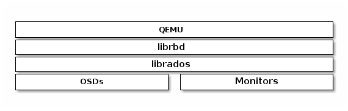

QEMU 与块设备¶
Ceph 块设备最常见的用法之一是作为虚拟机的块设备映像。例如，一用户可创建名为 golden 的映像，并安装、配置好了操作系统和相关软件，然后为此映像拍下快照，最后再克隆此快照（通常很多次）。详情参见快照，能制作快照的写时复制克隆品意味着 Ceph 可以快速地为虚拟机提供块设备映像，因为客户端每次启动一个新虚拟机时不必下载整个映像。

Ceph 块设备可以和 QEMU 虚拟机集成到一起，关于 QEMU 见 QEMU 开源处理器仿真器，其文档： QEMU 手册。关于如何安装见安装。
Important
要让 QEMU 使用 Ceph 块设备，你必须有个运行着的 Ceph 集群。
用法¶
QEMU 命令行要求你指定 pool 名字和映像名字，还可以指定快照名。
QEMU 会假设 Ceph 配置文件位于默认位置（如 /etc/ceph/$cluster.conf ）、并且你会以默认的 client.admin 用户执行命令，除非你另外指定了其它 Ceph 配置文件路径或者其他用户。指定用户时， QEMU 只需要 ID 部分，无需完整地指定 TYPE:ID ，详情见用户管理——用户。别在用户 ID 前面加客户端类型（即 client. ），否则认证会失败。还应该把 admin 用户、或者你用 :id={user} 选项所指定用户的密钥保存到默认路径（即 /etc/ceph ）或本地目录内的密钥环，并修正密钥环文件的所有权和权限位。命令格式如下：
qemu-img {command} [options] rbd:{pool-name}/{image-name}[@snapshot-name][:option1=value1][:option2=value2...]
例如，应该这样指定 id 和 conf 选项：
qemu-img {command} [options] rbd:glance-pool/maipo:id=glance:conf=/etc/ceph/ceph.conf
Tip
配置中的值如果包含这些字符： : 、 @ 、 = ，可在此符号前加反斜线 \ 转义。
用 QEMU 创建映像¶
你可以用 QEMU 创建块设备映像。必须指定 rbd 、存储池名、要创建的映像名以及映像尺寸。
qemu-img create -f raw rbd:{pool-name}/{image-name} {size}
例如：
qemu-img create -f raw rbd:data/foo 10G
Important
The raw data format is really the only sensible format option to use with RBD. Technically, you could use other QEMU-supported formats (such as qcow2 or vmdk), but doing so would add additional overhead, and would also render the volume unsafe for virtual machine live migration when caching (see below) is enabled.
用 QEMU 更改映像尺寸¶
你可以通过 QEMU 调整块设备尺寸。必须指定 rbd 、存储池名、要调整的映像名，还有映像尺寸。
qemu-img resize rbd:{pool-name}/{image-name} {size}
例如：
qemu-img resize rbd:data/foo 10G
用 QEMU 检索映像信息¶
你可以用 QEMU 检索块设备映像信息。必须指定 rbd 、存储池名、和映像名。
qemu-img info rbd:{pool-name}/{image-name}
例如：
qemu-img info rbd:data/foo
通过 RBD 运行 QEMU¶
QEMU 能把一主机上的块设备传递给访客，但从 QEMU 0.15 起，不需要在主机上把映像映射为块设备了。 QEMU 现在能直接用 librbd 把映像当虚拟块设备访问了，这样性能更好，因为它避免了额外的上下文切换，而且能利用启用 RBD 缓存带来的好处。
你可以用 qemu-img 把已有的虚拟机映像转换为 Ceph 块设备映像，比如你有一个 qcow2 映像，可以这样转：
qemu-img convert -f qcow2 -O raw debian_squeeze.qcow2 rbd:data/squeeze
要从那个映像引导虚拟机，执行：
qemu -m 1024 -drive format=raw,file=rbd:data/squeeze
启用 RBD 缓存可显著提升性能。从 QEMU 1.2 起，缓存选项可控制 librbd 缓存：
qemu -m 1024 -drive format=rbd,file=rbd:data/squeeze,cache=writeback
如果你的 QEMU 版本较老，你可以用 file 参数更改 librbd 缓存配置（就像其它 Ceph 配置选项一样）：
qemu -m 1024 -drive format=raw,file=rbd:data/squeeze:rbd_cache=true,cache=writeback
Important
如果你设置了 rbd_cache=true ，那就必须设置 cache=writeback 否则有可能丢数据。没有 cache=writeback ， QEMU 就不会向 librbd 发送回写请求，如果 QEMU 退出时未清理干净， rbd 之上的文件系统就有可能被篡改。
启用 Discard/TRIM 功能¶
从 Ceph 0.46 和 QEMU 1.1 起， Ceph 块设备设备支持 discard 操作，这意味着访客可以发送 TRIM 请求来让 Ceph 块设备回收未使用的空间。此功能可在访客上挂载 ext4 或 XFS 时用 discard 选项启用。
要使此功能对访客可用，必须对块设备显式启用。为此，你必须指定在驱动器上指定 discard_granularity ：
qemu -m 1024 -drive format=raw,file=rbd:data/squeeze,id=drive1,if=none \
-device driver=ide-hd,drive=drive1,discard_granularity=512
注意这个使用 IDE 驱动器， virtio 驱动不支持 discard 。
如果用的是 libvirt ，得用 virsh edit 编辑配置文件，加上 xmlns:qemu 值。然后加一个 qemu:commandline 块作为那个域的子域。下例展示了如何用 qemu id= 为两个设备设置不同的 discard_granularity 值。
<domain type='kvm' xmlns:qemu='http://libvirt.org/schemas/domain/qemu/1.0'>
<qemu:commandline>
<qemu:arg value='-set'/>
<qemu:arg value='block.scsi0-0-0.discard_granularity=4096'/>
<qemu:arg value='-set'/>
<qemu:arg value='block.scsi0-0-1.discard_granularity=65536'/>
</qemu:commandline>
</domain>